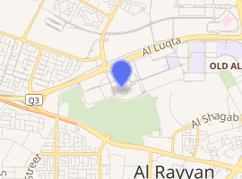

The next FIFA World Cup is scheduled to take place in Qatar from 21 November to 18 December 2022. The following stadium were choosen to host games:
Capacity: 80,000 seats | Opening: 2021 | Status: under construction
Lusail Iconic Stadium or Lusail National Stadium (Arabic: ملعب لوسيل الدولي) is a stadium under construction in Lusail, Qatar. Scheduled to open in early 2022, the new facility will host the final of the 2022 FIFA World Cup. Construction officially began on 11 April 2017. Its final design was unveiled in December 2018.
The stadium was designed by British firm Foster + Partners, who received support from MANICA Architecture specializing in sport design. In the construction phase, KEO Consultants provided design services to the Contractor as part of its Design & Build. KEO were replaced in 2018. The design includes an almost circular base and will be surrounded by a moat and be connected to the car park by six bridges.
The stadium has a capacity of 80,000 seats. It has a near-circular footprint and sits on the masterplan's primary axis, which divides the stadium precinct into two halves. Encircled by a reflective pool of water, spectators cross the 'moat' to enter the building via six bridges. An outer pedestrian concourse extends from the water towards an array of smaller amenity buildings and a hotel at the stadium's perimeter. The British designers sought to mirror the ancient Arab craft of bowl weaving in the stadium's inner structure.
The saddle-form roof appears to float above the concrete seating bowl, discreetly supported by a ring of arching columns. Its central section can be retracted to allow the pitch to be either open to the sky or fully covered. The concave profile of the stadium's outer enclosure evokes the sails of a traditional dhow boat and incorporates a system of operable louvres. Inside, the seating bowl is designed to enhance the experience and atmosphere for spectators: VIP and hospitality accommodation is concentrated along the sides of the pitch to create a continuous sea of fans behind each goal.
Located in the centre of a new development to the north of Doha, with direct connections by road and a new metro line, Lusail Iconic Stadium is intended to be a catalyst for development growth of Lusail city. Parking and service areas are shaded by canopies of solar collectors, which will produce energy for the stadium when it is in use, as well as generating power for neighbouring buildings.
The stadium was scheduled for completion in 2020 and will host three friendly matches until the 2022 World Cup. Following the World Cup, it is expected to be reconfigured into a 40,000-seat stadium. Excess seating will be removed, and other parts of the building repurposed as a community space with shops, cafés, athletic and education facilities, and a health clinic.
Al Bayt Stadium | Capacity: 60,000 seats | Opening: 2020
Al Bayt Stadium (Arabic: استاد البيت) is a football stadium in Al Khor, Qatar, intended to be used for matches in the 2022 FIFA World Cup. The stadium's construction contract was awarded to Salini and Cimolai in 2015. In January 2020, the stadium received sustainability certificates of green design, construction management and energy efficiency.
The opening ceremony of the 2022 World Cup will take place at Al Bayt Stadium. FIFA and the Organizing Committee of the Qatar Supreme Committee have confirmed the start date as November 21 with an audience of 60,000. The architectural design takes its inspiration from the traditional tents of the nomadic peoples of Qatar and the region. It will take on an asymmetrical seashell motif, providing covered seating for all spectators. Connected to a number of transportation systems, the onsite parking will be able to hold 6,000 cars, 350 buses and the coming and going of 150 public buses/shuttles, as well as 1,000 taxis and water taxis. The stadium will host around 60,000 World Cup fans,[6] including 1,000 seats for press. The stadium is certified for its sustainability credentials under the Global Sustainability Assessment System (GSAS) for a number of certifications representing sustainable design & build, construction management practices and the efficiency of its energy center. The stadium also received a five-star GSAS rating.
The stadium will also include luxurious hotel suites and rooms with balcony views of the football field.
To mark the National Sports Day, stadium's adjacent park's official opening was announced to be held on Qatar's sports day itself, 11 February 2020.
Al Janoub Stadium | Capacity: 40,000 seats | Opening: 2019
Al-Janoub Stadium, formerly known as Al-Wakrah Stadium (Arabic: ملعب الجنوب), is a football stadium in Al-Wakrah, Qatar that was inaugurated on 16 May 2019. This is the second among the eight stadiums for the 2022 FIFA World Cup in Qatar, after the renovation of Khalifa International Stadium. It was designed by Iraqi-British architect Zaha Hadid together with the firm AECOM.
The stadium features a curvilinear postmodernist and neo-futurist design. The appearance of the roof was inspired by the sails of traditional Dhow boats, used by pearl divers from the region, weaving through currents of the Persian Gulf.
It will be the official seat of the football club Al-Wakrah SC, where matches for the Qatar Stars League will be held. The capacity of the stadium is 40,000, which is expected to reduce in half to 20,000 after the World Cup.
The stadium was designed by British-Iraqi architect Zaha Hadid, and her architectural firm, Zaha Hadid Architects. Zaha Hadid Architects stated that “The stadium was designed in conjunction with a new precinct so that it sits at the heart of an urban extension of the city, creating community-based activities in and around the stadium on non-event days.
According to the designers, it was inspired by the sails of traditional Dhow boats, used by pearl divers from the region, weaving through currents of the Persian Gulf. The curvilinear roof and exterior references Al Wakrah's history of seafaring, additionally giving spectators the feeling on being on a ship. Bowed beams hold up the roof, resembling a ship's hull. The building is meant to resemble upturned dhow hulls arranged in a huddle to provide shade and shelter. The roof of the stadium is retractable, and is made from pleated PTFE fabric and cables, with the roof arches being 230 meters long.
The cooling system prevents the stadium's users from overheating, due to Qatar's hot and arid climate. It is capable of cooling the spectator areas to 18°C and the field of play to 20°C. According to Qatar's Supreme Committee for Delivery & Legacy (SC), "detailed micro-climate analysis informed the arena's shape, with aerodynamics and optimal shading from the roof, which incorporates a minimal amount of glass, making a significant contribution to temperature control."
Khalifa International Stadium | Capacity: 40,000 seats | Opening: 1976
Khalifa International Stadium (Arabic: ملعب خليفة الدولي, romanized: Istād Khalīfah), also known as National Stadium, is a multi-purpose stadium in Doha, Qatar, as part of the Doha Sports City complex, which also includes Aspire Academy, Hamad Aquatic Centre, and the Aspire Tower. It is named after Khalifa bin Hamad Al Thani, Qatar's former Emir. The final of 2011 AFC Asian Cup was held at this stadium. The stadium is also the first completed venue that will host a part of the 2022 FIFA World Cup. In 2017, it received a four-star rating from the Global Sustainability Assessment System (GSAS), the first in the world to be awarded this rating.
The stadium opened in 1976. In 1992, the stadium hosted the games of the 11th Gulf Cup with its 15 games. Qatar finally came first and won the first golf cup. It was renovated and expanded in 2005, before the 2006 Asian Games, to increase its capacity from originally 20,000 to 40,000 seats. A roof covers the western side of the stadium. The eastern side has a large arch, which was used as a platform to launch fireworks from during the 2006 Asian Games opening ceremony.
Before the 2005 renovation, the stadium was used mostly for association football (soccer) matches, but it is equipped for many other sports. Since 1997, the stadium has hosted the annual Doha Diamond League (previously known by other names) track and field competition. It is the Qatar national football team's home stadium. The stadium hosted 6 games of the 2011 Pan Arab Games: all matches of the Qatar national team in the group stage, as well as the quarterfinals, semi-finals and finals of the tournament.
After another redevelopment, the stadium reopened in May 2017. The stadium was the site of the 2019 World Athletics Championships in September and October of that year. On 17 December 2019, the stadium is scheduled as the venue of two 2019 FIFA Club World Cup matches: the fifth-place match and the semi-final between the CONMEBOL Libertadores champions and the winner of Match 3. Following the decision to host the 2022 FIFA World Cup in Qatar in 2022, it was planned to increase the capacity of the stadium to 68,000.
Ras Abu Aboud Stadium | Capacity: 40,000 seats | Opening: 2021 | Status: under construction
Ras Abu Aboud Stadium (Arabic: استاد راس أبو عبود), is a proposed football stadium which will be built in Doha, Qatar in time for the 2022 FIFA World Cup.[1] The stadium is scheduled to host matches up to the quarter finals at the 2022 World Cup.
It has a planned capacity of 40,000 spectators on a 450,000 square-meter waterfront site and will be situated on an artificial promontory. It will build to a modular design, using recycled shipping containers, and is set to be dismantled after the 2022 World Cup concludes.
Al Thumama Stadium | Capacity: 40,000 seats | Opening: 2020 | Status: under construction
Al Thumama Stadium (Arabic: ملعب الثمامة Malʿab ath-Thumāma) is a football stadium currently under construction in Al Thumama, Qatar. It will be a venue of the 2022 FIFA World Cup in Qatar.
The Al Thumama Stadium is one of seven stadiums, which are built for the FIFA World cup Qatar 2022. It is located near Hamad International Airport.[3] A joint venture between Al Jaber Engineering of Qatar and Tekfen Construction of Turkey is significantly involved in the construction work. The architectural design, by the Chief Architect of Arab Engineering Bureau Ibrahim Jaidah,[4] takes its inspiration from the traditional taqiyah hat, a traditional cap which is worn by men and boys across the middle east.[5][6] A 50,000 m2 (540,000 sq ft) public park will surround the stadium.[3] The stadium has a capacity 40,000 seats. Its completion is expected for 2021.
Education City Stadium | Capacity: 40,000 seats | Opening: 2020
Education City Stadium (Arabic: استاد المدينة التعليمية), is a football stadium which is located in Al Rayyan, Qatar, and was built as a venue for the upcoming 2022 FIFA World Cup held in Qatar. The stadium is located within several university campuses at the Qatar Foundation's Education City.Following the FIFA World Cup, the stadium will retain 25,000 seats for use by university athletic teams. On 3 September 2020, the stadium hosted its first official match, played in the 2020–21 Qatar Stars League season.
With 20 percent of its building materials identified as green, the stadium is among the world's most environmentally sustainable stadiums. In May 2019, Education City Stadium received a five-star GSAS rating.
The build contractor is JPAC JV, who appointed Pattern Design as the lead design architect, and Buro Happold for the engineering design.
Construction of the stadium was completed in June 2020 and it officially opened on 15 June 2020.
On 30 September 2019, FIFA announced the Education City Stadium as the host of the third place match and final of the 2019 FIFA Club World Cup, with the tournament being held in Qatar. The stadium would also have hosted Liverpool’s first match in the semi-finals, but on 7 December 2019, the official opening of Education City Stadium was postponed until early 2020. Thus, Liverpool's opener, the final, and the third place match were all moved to the Khalifa International Stadium in Doha.
The 2020 FIFA Club World Cup was once again held in Qatar, with the Education City Stadium now ready to hold matches. One second round match, one semi-final match, the third place match and the final between Bayern Munich and UANL all took place in the stadium.
Al Rayyan Stadium | Capacity: 40,000 seats | Opening: 2021 | Status: under construction
Ahmed bin Ali Stadium (Arabic: ملعب أحمد بن علي), popularly known as the Al-Rayyan Stadium, is a multi-purpose stadium in Al Rayyan, Qatar, which is home to Al-Rayyan Sports Club and Al-Kharitiyath Sports Club. The stadium, built in 2003, had a seating capacity of 21,282.
The former Ahmed bin Ali Stadium was demolished in 2015 to make way for the Al Rayyan Stadium. 90 percent of the rubble resulting from the demolition of the stadium are anticipated to be reused either for the new stadium or for public art projects.[3] The new stadium was built in the place of Ahmed bin Ali Stadium for the 2022 FIFA World Cup, which Qatar will host.The renovation includes a huge 'media facade' with a membrane that will act as a screen for projections, news, commercials, sports updates, current tournament information and matches. Seating capacity was increased to 40,740, and all seats was shaded.
The construction of the new stadium was ongoing since the beginning of 2016.This is being done by the joint venture between Al-Balagh and Larsen & Toubro. After the World Cup the stadium will be reduced to 21,000 seats and become home to Al-Rayyan SC.
The inauguration of the stadium took place on 18 December 2020, which was Qatar's National Day, and exactly two years before the country hosts the 2022 FIFA World Cup final.[7] The stadium will also be one of two venues used for the 2020 FIFA Club World Cup.